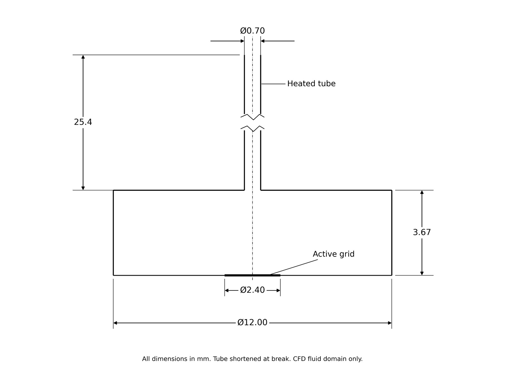
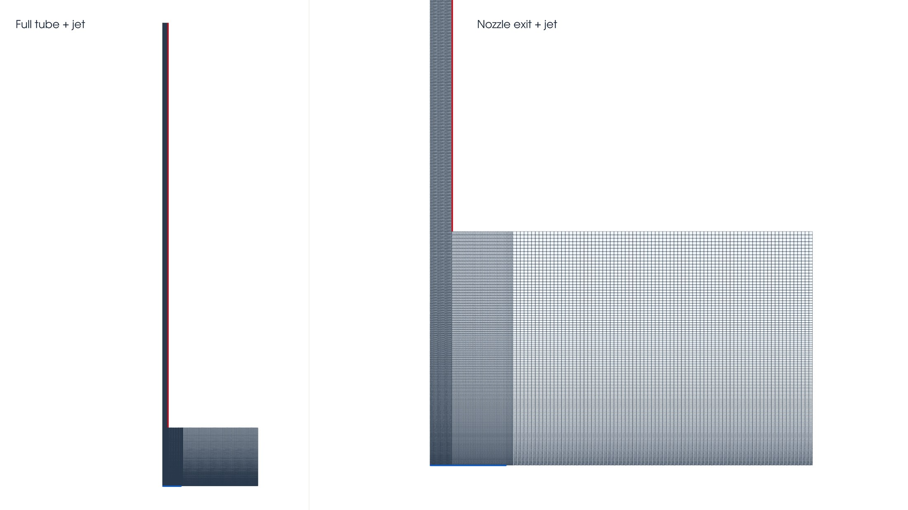
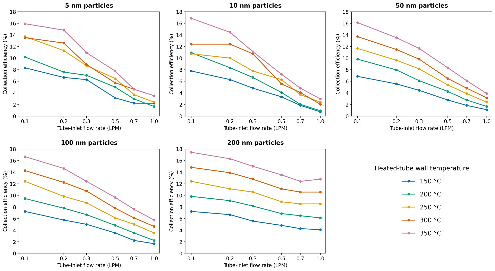
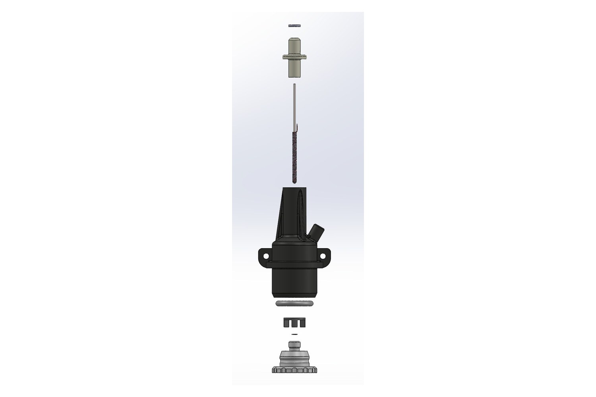
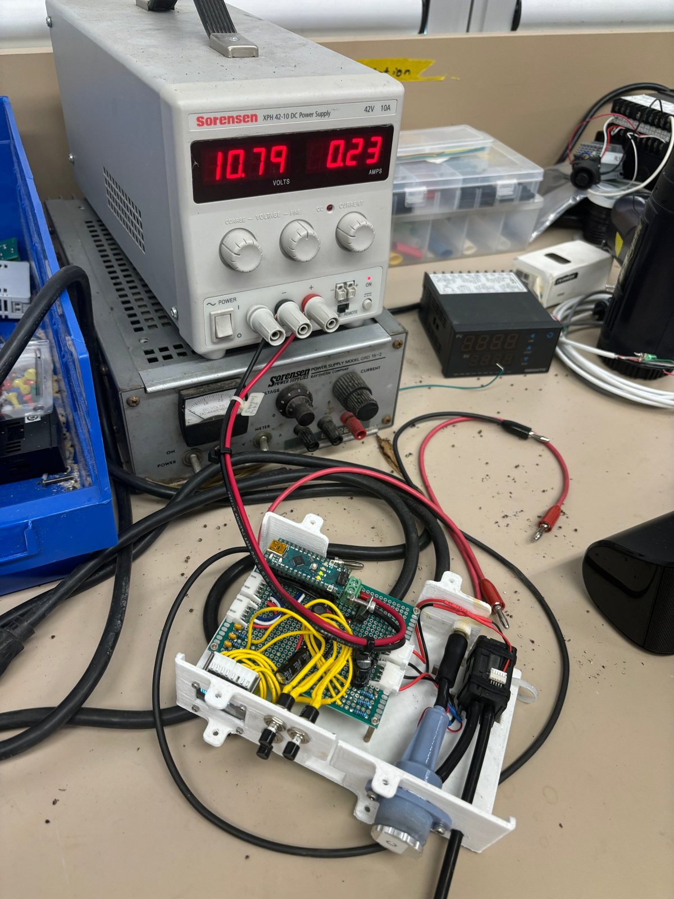
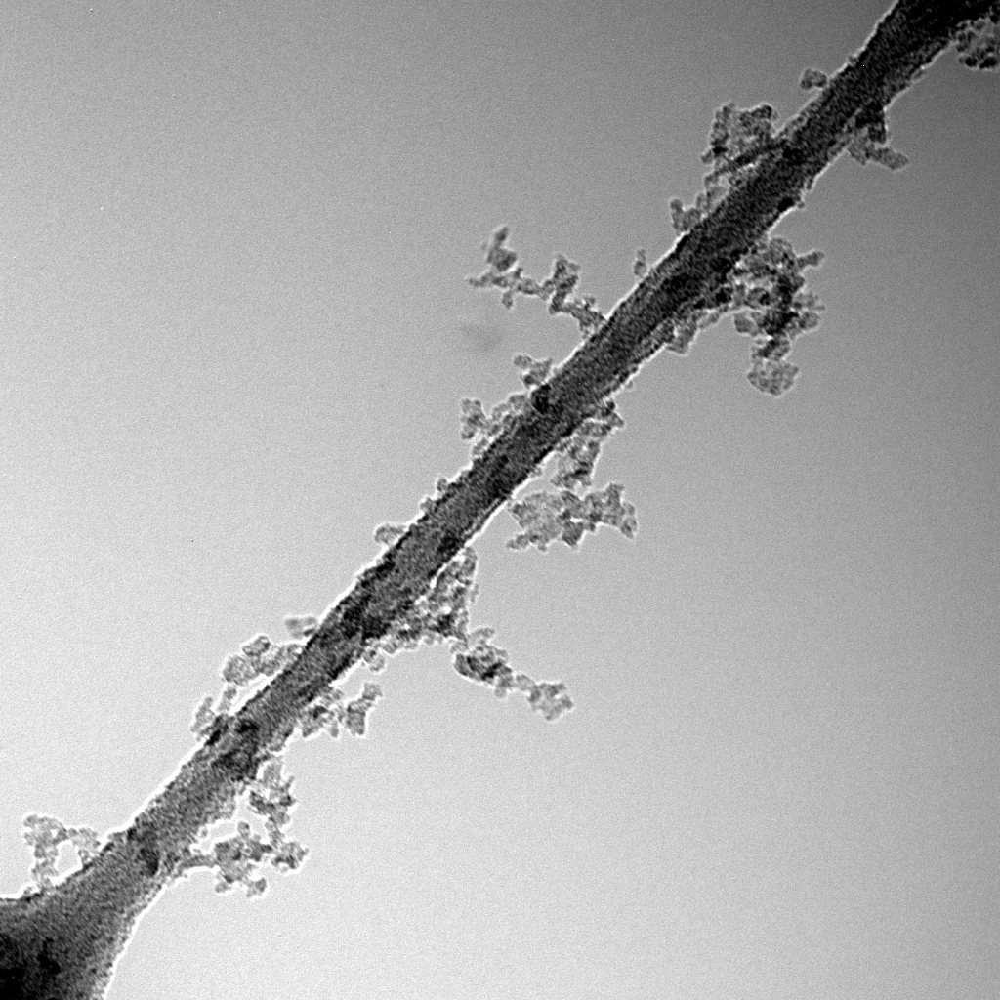
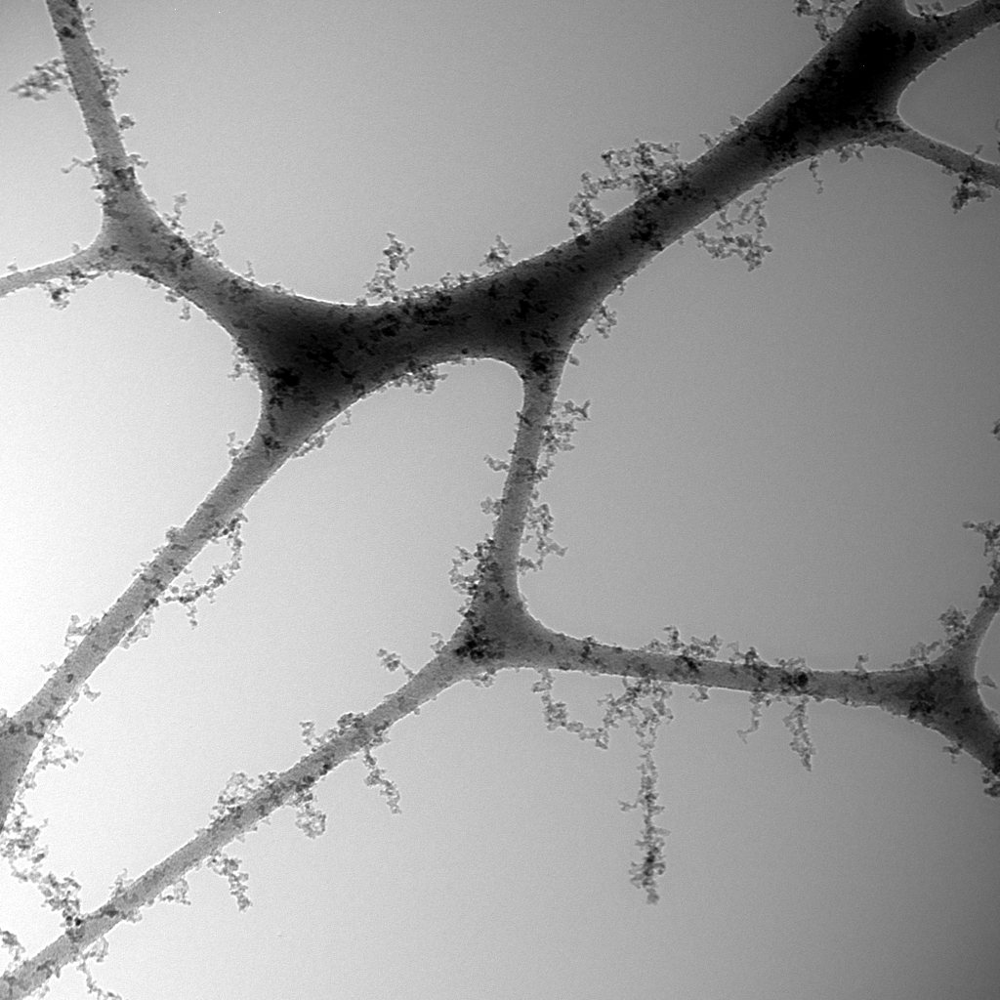
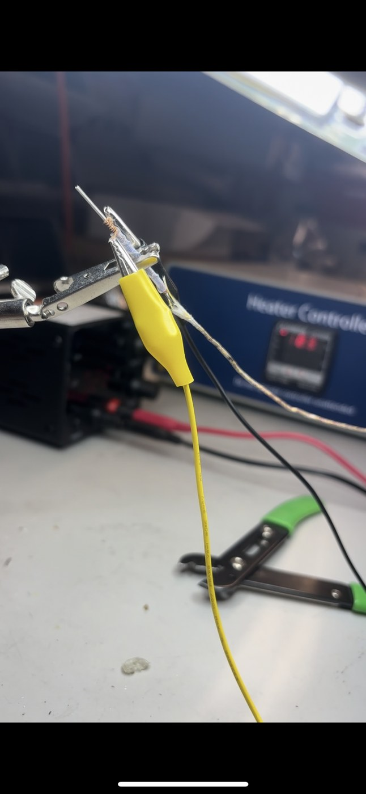
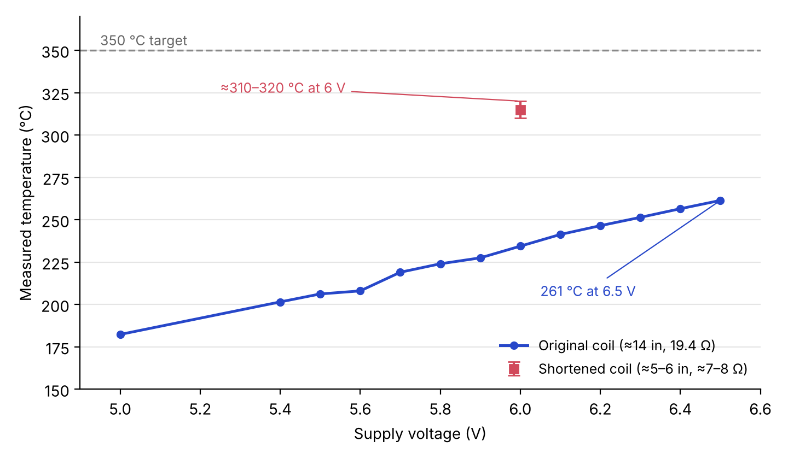
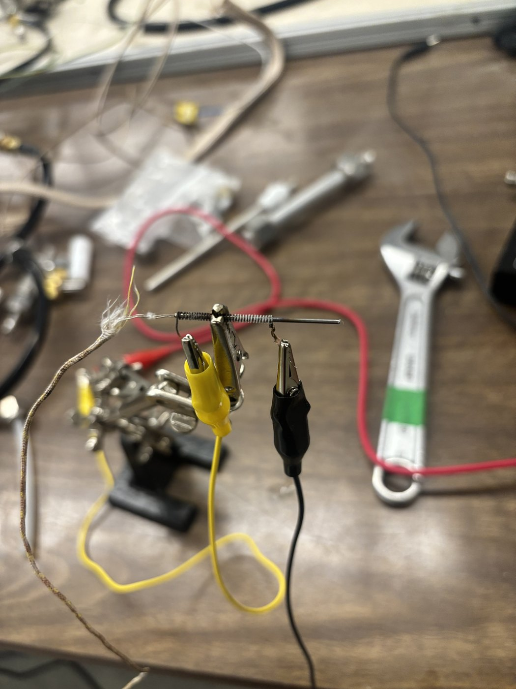

Thermophoretic Sampler
Experimental and computational validation of a TEM grid sampler
- Year
- 2026–27
- Context
- MECH 493 thesis project · UBC Energy & Aerosol Laboratory
- Tools
- OpenFOAM · CFD · SMPS · Spark-discharge aerosol · TEM · Arduino
Testing the UBC thermophoretic sampler against a known aerosol and an OpenFOAM model, as the first step toward a package that collects several TEM samples during one UAV flight.
Why
Combustion particles affect climate, air quality, and health, and their shape and size control how they behave. TEM is the most direct way to see that morphology, but the particles first have to land on a 3 mm grid. A thermophoretic sampler (TPS) does this with a temperature gradient: aerosol passes through a heated tube and leaves as a hot jet aimed at a cool grid, and particles drift from hot gas toward the cold surface with little size bias. On an aircraft or drone the aerosol changes with time, altitude, and distance from the source, so one grid per flight averages everything. The goal is a compact package that collects at least five separate samples in a single flight.
Starting point
The most recent UBC sampler (Farnese, 2017) is compact, light, and runs on 5 V with a Nichrome heater, but it holds only one grid, its operating point (0.1 L/min, 150 °C) was never documented, and the lab's units behaved differently. Phase 1 below characterizes and validates a single sampler; the multi-sample package follows.
Phase 1a · CFD modelling
An OpenFOAM model predicts how much of the incoming aerosol lands on the grid, and which wall temperature and flow rate to run at. Shown in the order the work was done.
Domain and mesh
The fluid domain covers the 25.4 mm heated tube (0.70 mm bore) and the impinging jet over the grid, on a 2D axisymmetric wedge mesh of 55,360 cells refined near the grid. The gas flow and temperature are solved first and frozen, then the tube and jet fields are joined into one connected mesh for particle tracking.


Particle transport
Each particle feels drag from the gas, thermophoresis toward colder gas, inertia in the sharp turn of the jet, and Brownian motion (important at 5–10 nm). In the example run (350 °C wall, 0.3 L/min, 50 nm), 63 of 540 particles reach the grid, a collection efficiency of 11.7%.
150-case parameter study
Nov 2026Five wall temperatures (150–350 °C), six flow rates (0.1–1.0 L/min), and five particle sizes (5–200 nm). A hotter wall raises efficiency at every condition (4.4% to 11.7% from 150 to 350 °C at 0.3 L/min, 50 nm), and more flow lowers it. The effective collection flow (inlet flow × efficiency) levels off above about 0.3–0.5 L/min for 5–100 nm particles but keeps rising for 200 nm, so high flow over-samples large particles.


Candidate operating point
350 °C wall and 0.3 L/min, still under investigation. At 0.3 L/min the collection flow (33–45 mL/min) is about twice that at 0.1 L/min and still similar across sizes; at higher flow the 200 nm particles pull ahead. The open questions are whether the heater can hold 350 °C and whether measured efficiencies match the CFD.
Phase 1b · Experiments
Bench tests of the real sampler and hardware changes to reach the operating point the model recommends. Shown in chronological order.
The existing sampler
The starting hardware: aerosol enters a stainless inlet tube wrapped in a Nichrome heater, leaves as a jet through the gap above the grid, and exits through the housing, with an Arduino Nano, circuit board, and pump driving it.

Spark-discharge tests
Oct 2026A Palas GFG 1000 spark-discharge generator made the aerosol, an SMPS measured the reference size distribution (about 1.1 × 10⁷ particles/cm³, geometric mean 24.5 nm), and the sampler collected particles onto TEM grids using its own timer-controlled box.




First TEM grids
Oct 202610- and 20-minute samples collected plenty of aggregates on lacey carbon grids, but the deposit is not uniform, so grid counts alone can't give a reliable efficiency. Efficiency will instead come from SMPS concentrations at the inlet and the exhaust.


Old sampler heater tests
Nov 2026At the original condition (0.1 L/min, 4.04 V on the 19.4 Ω coil) the tube reached only 42 °C, far below the assumed 150 °C. After checking that the Nichrome wasn't shorting to the tube, it reached 182 °C at the 5 V design voltage, and a sweep up to 6.5 V topped out at 261 °C: the heater works, but has too little power for 350 °C.


Heater rebuild
Nov 2026Since P = V²/R, a shorter wire gives more heat at the same voltage. Shortening the coil from about 14 in (19.4 Ω) to about 5–6 in (7–8 Ω) brought the reading to about 310–320 °C at 6 V. Next is insulating the coil with a ceramic sleeve, since the old heat shrink is only rated to 260 °C.



Next steps
- Insulate the new heater coil (ceramic sleeve) and hold 350 °C at 0.3 L/min
- Measure wall and grid temperatures, build one new sampler, and write the procedure
- Collection-efficiency tests with SMPS at the inlet and exhaust, compared with the CFD
- Multi-sample package: compare carousel, cartridge, and multi-sampler concepts, then design, build, and test with at least five grids